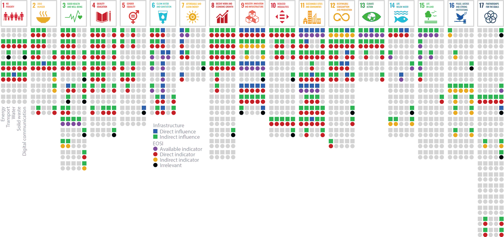
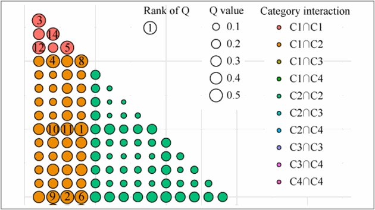
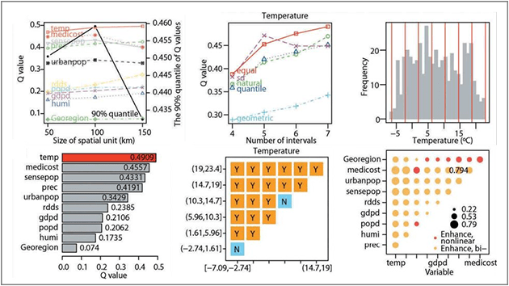
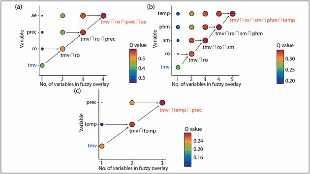
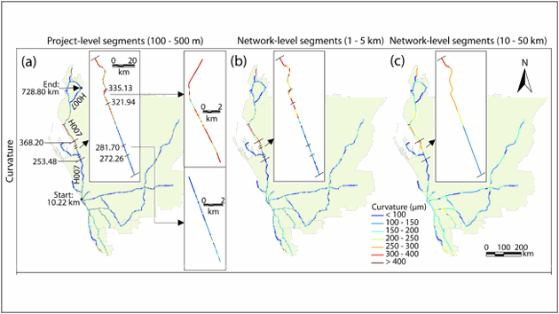
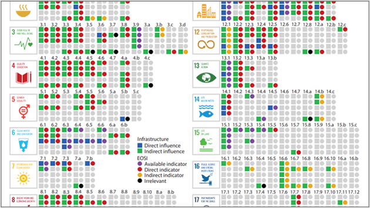

What is Sustainable Infrastructure?
Sustainable infrastructure is the infrastructure that is designed, constructed, and maintained with socio-economic and environmental considerations and that can perpetuate and enhance the environment. The objective of sustainable infrastructure development is to develop methods and solutions for resilient and sustainable infrastructure and facilities.
"Earth observation has great potential for sustainable infrastructure development. EOSI benefits about 85% of infrastructure influenced SDGs and 61% of all 169 SDG targets, but Earth observation is only implemented in 15% of infrastructure influenced SDG targets, and 70% of infrastructure influenced targets that can be directly or indirectly derived from Earth observation data have not been included in current SDG indicators."

https://doi.org/10.3390/rs13081528
Factors



Performance

Impacts

Article Collection
- Song, Y., Wu, P., Hampson, K., and Anumba, C., 2021. Assessing Block-level Sustainable Transport Infrastructure Development Using a Spatial Trade-Off Relation Model. International Journal of Applied Earth Observation and Geoinformation. 105, 102585.
- Wu, P., Wang, P., Chi, H. L., Zhong, Y., & Song, Y., 2022. Exploring Factors Affecting Transport Infrastructure Performance: Data-Driven Versus Knowledge-Driven Approaches. IEEE Transactions on Intelligent Transportation Systems.
- Song, Y., & Wu, P., 2021. Earth Observation for Sustainable Infrastructure: A Review. Remote Sensing. 13(8), 1528.
- Song, Y., Wu, P., 2021. An interactive detector for spatial associations. International Journal of Geographical Information Science.
- Song, Y., Thatcher, D., Li, Q., McHugh, T., & Wu, P., 2021. Developing sustainable road infrastructure performance indicators using a model-driven fuzzy spatial multi-criteria decision making method. Renewable and Sustainable Energy Reviews. 138. 110538.
- Song, Y., Wu, P., Li, Q., Liu, Y., and Karunaratne, L., 2021. Hybrid Nonlinear and Machine Learning Methods for Analyzing Factors Influencing the Performance of Large-Scale Transport Infrastructure. IEEE Transactions on Intelligent Transportation Systems. 🏆 Highly Cited Paper
- Luo, P., Song, Y.* Wu, P., 2021. Spatial disparities in trade-offs: economic and environmental impacts of road infrastructure on continental level. GIScience & Remote Sensing.
- Song, Y., Wu, P., Gilmore, D., et al., 2020. A Spatial Heterogeneity-Based Segmentation Model for Analyzing Road Deterioration Network Data in Multi-Scale Infrastructure Systems. IEEE Transactions on Intelligent Transportation Systems.
- Jiang, R., Wu, C., Song, Y. and Wu, P., 2020. Estimating carbon emissions from road use, maintenance and rehabilitation through a hybrid life cycle assessment approach–a case study. Journal of Cleaner Production. p.123276.
- Song, Y., Wang, X.Y., Wright, G., Thatcher, D., et al., 2019. Traffic Volume Prediction with Segment-Based Regression Kriging and its Implementation in Assessing the Impact of Heavy Vehicles. IEEE Transactions on Intelligent Transportation Systems. (20)1: 232 – 243. 🏆 Highly Cited Paper
- Song, Y., Tan, Y., Song, Y.M., et al., 2018. Spatial and temporal variations of spatial population accessibility to public hospitals: A case study of rural-urban comparison. GIScience & Remote Sensing. 🏆 Highly Cited Paper
- Song, Y., Wright, G., Wu, P., Thatcher, D., et al., 2018. Segment-Based Spatial Analysis for Assessing Road Infrastructure Performance Using Monitoring Observations and Remote Sensing Data. Remote Sensing. 10(11): 1696.